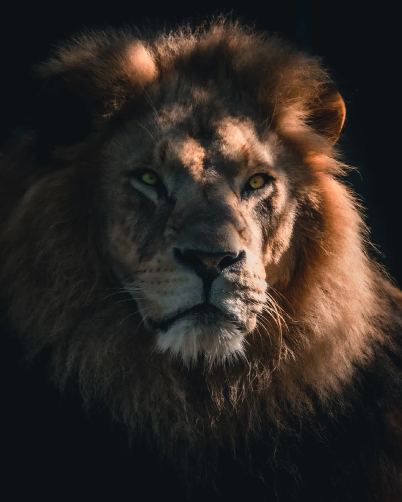

The Lion
The Lion
The Lion or African Lion, is the symbol of courage and strength to many people around the world across the ages. They are stronger - losing only to tigers - and their roars can be heard from five miles.

Long Live
The lion, also known as the King of the Jungle, is one of the most fantastic creature on Earth.
To The King
The Lion
The Lion or African Lion, is the symbol of courage and strength to many people around the world across the ages. They are stronger - losing only to tigers - and their roars can be heard from five miles.
King's coat
Only male lions typically have manes. When the lion grows up, the colors of his coat is yellow-gold and have shaggy manes that range in colors from blond to reddish-brown to black. The juveniles has some light spots that disappear with the age.
Size & Weight
Lions stand between 3.5 and 4 feet (1 and 1.2 meters) tall at the shoulder.
Males grow to lengths of 10 feet (3 meters) and have a 2 to 3 foot (60 to 91 centimeter) tail. They weigh from 330 to 550 pounds (150 to 250 kilograms).
Slightly smaller, females grow to lengths of 9 feet (2.7 meters) and weigh between 265 and 395 pounds.
Their habitat
Lions inhabit a wide range of habitats, from open plains to thick brush and dry thorn forest from the Sahara's southern fringe to northern South Africa.
They are absent from equatorial areas dominated by moist tropical forest.
Eating habits
Lions primarily eat large animals that weigh from 100 to 1,000 pounds (45 to 453 kilograms), such as zebra and wildebeest.
Lions also steal kills from hyenas, leopards and other predators. At times, they may lose their own catches to hyena groups.
In extinction
With fewer than an estimated 25,000 in Africa, lions are listed as vulnerable to extinction by the International Union for the Conservation of Nature, which determines the conservation status of species.
The survival of the species depends on working with local communities that must coexist with lions and recognizing their role in protecting them.

Save the lions